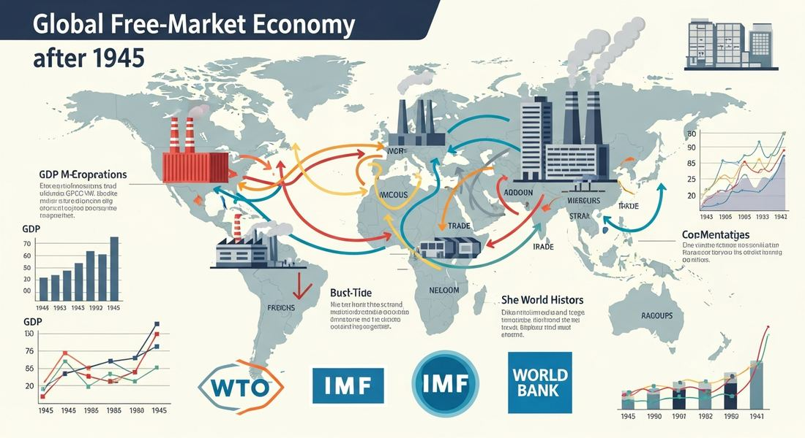

9.4 Economics in the Global Age
- LO-A: Free-market economics spread globally: The late 20th century saw a worldwide shift toward free-market economic policies, lower taxes, deregulation, privatization, and reduced trade barriers. Led by Reagan in the US, Thatcher in Britain, Deng Xiaoping in China, and others, this shift accelerated after the Cold War ended in 1991, as the market economy appeared to have "won." Knowledge economies vs. manufacturing economies: The information revolution created "knowledge economies" in wealthy nations (Finland, Japan, US) built on high-skill service work. Meanwhile, industrial production and manufacturing shifted to Asia (Vietnam, Bangladesh) and Latin America (Mexico, Honduras), where labor was cheaper. This global division of labor transformed employment patterns worldwide. Multinationals and trade agreements reshaped global commerce: Multinational corporations (Nestlé, Nissan, Mahindra) operated across borders, often more powerful than many national governments. Regional trade agreements (WTO, NAFTA, ASEAN) reduced barriers and integrated economies, but also sparked debates about sovereignty and inequality. Global integration brought gains and losses: Free trade and global supply chains dramatically reduced the prices of consumer goods and lifted hundreds of millions out of poverty in East Asia. But they also displaced workers in wealthier nations whose jobs moved to cheaper locations, and often concentrated profits in the hands of corporations and wealthy shareholders.
Try each question before revealing the answer.
1. What is "economic liberalization" and why did it spread after the Cold War?
2. How did Deng Xiaoping's economic reforms transform China after 1978?
3. What is NAFTA and why was it controversial?
- Explain the continuities and changes in the global economy from 1900 to present, including the spread of free-market policies, the emergence of knowledge and manufacturing economies, and the role of multinational corporations and regional trade agreements
Tap a term for its definition.
-
Definition: Policies reducing government intervention in the economy, lowering tariffs, privatizing state enterprises, deregulating industries, and reducing trade barriers. Significance: Spread globally in the late 20th century, transforming the world economy; associated with Reagan, Thatcher, Deng, and Pinochet in the CED.
-
Definition: An economy where growth is driven by high-skill services, technology, and innovation rather than industrial manufacturing. Significance: The CED identifies Finland, Japan, and the US as illustrative examples; the information revolution of the 1990s–2000s accelerated this shift in wealthy nations.
-
Definition: A company that operates in multiple countries, with production, sales, and management across national borders. Significance: CED examples: Nestlé (Switzerland), Nissan (Japan), Mahindra and Mahindra (India). MNCs accumulated economic power rivaling many national governments.
-
Definition: International organization (founded 1995) that sets rules for global trade and resolves trade disputes between nations. Significance: CED illustrative example; expanded free trade by reducing tariffs and settling disputes, but also challenged national sovereignty over trade policy.
-
Definition: North American Free Trade Agreement (1993) eliminating most tariffs between the US, Canada, and Mexico. Significance: CED illustrative example of regional trade agreements; boosted trade but also displaced workers and sparked political backlash against economic globalization.
-
Definition: Association of Southeast Asian Nations, a regional economic and political bloc. Significance: CED illustrative example; promoted economic integration among Southeast Asian nations, contributing to the region's manufacturing growth in the late 20th century.
🏛️ Free-Market Policies Spread Globally (KC-6.3.I.D)
One of the most significant economic developments of the late 20th century was the global spread of free-market economic policies. The AP CED identifies this directly: "In a trend accelerated by the end of the Cold War, many governments encouraged free-market economic policies and promoted economic liberalization in the late 20th century." The CED identifies four specific governments as illustrative examples. Reagan's US, Thatcher's Britain, Deng Xiaoping's China, and Pinochet's Chile.
In the United States, President Ronald Reagan (1981–1989) pursued an agenda of tax cuts, deregulation, and reduced government spending. "Reaganomics" rested on the belief that free markets allocate resources more efficiently than government, and that cutting taxes would stimulate investment and economic growth. Reagan cut top income tax rates from 70% to 28% and deregulated industries from airlines to financial services. In Britain, Prime Minister Margaret Thatcher (1979–1990) pursued similar policies, privatizing state-owned industries (British Steel, British Telecom, British Airways), breaking the power of trade unions, and cutting government programs. Both leaders became international symbols of a broader ideological turn toward market economics.
In China, Deng Xiaoping pursued a very different path to market economics, one that maintained Communist Party political control while introducing market mechanisms into the economy. After assuming power in 1978, Deng launched reforms that allowed farmers to sell surplus production, created Special Economic Zones where foreign investment was encouraged, and gradually opened Chinese industry to market competition. The result was extraordinary: China averaged roughly 10% annual economic growth for three decades, lifting hundreds of millions out of poverty and transforming China into the world's second-largest economy. In Chile, Augusto Pinochet, who had come to power in a 1973 military coup, implemented radical free-market reforms under the influence of US-trained economists (the "Chicago Boys"). Chile became an early laboratory for market liberalization, with mixed results: economic growth eventually followed, but severe social costs and human rights abuses marked the transition.

Image credit not specified.
AI-generated illustration (Google Gemini, 2025), commercially licensed.
💻 Knowledge Economies and Global Manufacturing (KC-6.3.I.E)
The information revolution of the late 20th century created a new form of economic organization. The CED notes that "in the late 20th century, revolutions in information and communications technology led to the growth of knowledge economies in some regions, while industrial production and manufacturing were increasingly situated in Asia and Latin America."
Knowledge economies emerged in wealthy nations that had the educational infrastructure, technology, and institutional quality to capitalize on the information revolution. The CED identifies Finland, Japan, and the US as illustrative examples. These economies shifted from manufacturing-based growth toward high-skill services: software development, financial services, healthcare, education, research and development. Workers in knowledge economies were paid for what they knew and could create, not primarily for physical labor. Finland became famous for its education system and Nokia's telecommunications dominance. Japan developed world-leading expertise in precision electronics and automotive engineering. The US, centered on Silicon Valley, became the global hub of software and internet companies.
Meanwhile, industrial production and manufacturing relocated to regions with lower labor costs. The CED specifically names Vietnam and Bangladesh in Asia, and Mexico and Honduras in Latin America, as illustrative examples of Asian and Latin American production and manufacturing economies. Bangladesh became the world's second-largest garment exporter. Vietnam became a major electronics manufacturing hub. Mexico, transformed by NAFTA, became deeply integrated into North American manufacturing supply chains. This geographic relocation of manufacturing, driven by wage differentials, created millions of factory jobs in the developing world but displaced manufacturing workers in wealthy nations, fueling political tension about globalization's costs and benefits.
🌐 Multinational Corporations and Regional Trade Agreements (KC-6.3.II.B)
The spread of free-market economics was institutionalized through new organizations and agreements that the CED describes as reflecting "the spread of principles and practices associated with free-market economics throughout the world." Two key forms: multinational corporations and regional trade agreements.
Multinational corporations (MNCs) were not new, companies like the British East India Company had operated across borders centuries earlier. But the late 20th century saw an explosion in MNC size, reach, and power. The CED identifies Nestlé (Swiss food and beverage giant, operating in nearly every country on Earth), Nissan (Japanese automaker with global production), and Mahindra and Mahindra (Indian conglomerate operating across continents) as illustrative examples. By the early 21st century, some MNCs had annual revenues exceeding the GDP of mid-sized nations. Their ability to shift production, investment, and profits across borders gave them enormous leverage over governments: a company that could threaten to move its factories to another country could effectively veto environmental, labor, or tax regulations it disliked.
Regional trade agreements lowered barriers between participating nations and created larger integrated markets. The World Trade Organization (WTO), founded in 1995, provided a global framework for trade rules and dispute resolution. NAFTA (1993) integrated North American economies. ASEAN deepened economic ties among Southeast Asian nations. The European Union, though predating this period, expanded dramatically after the Cold War to include most of Europe. These agreements generally increased trade, lowered consumer prices, and boosted economic efficiency, but also reduced national governments' ability to set their own trade and regulatory policies, and created winners and losers whose distribution became politically explosive.
⚖️ Winners and Losers in the Global Economy
The economic globalization of the late 20th century produced both enormous gains and significant costs, distributed very unevenly. At the global level, hundreds of millions of people in East and Southeast Asia escaped poverty as manufacturing jobs moved to their regions. China's middle class expanded from almost nothing in 1980 to hundreds of millions by 2020. Global income inequality between nations declined as developing economies grew rapidly.
But within wealthy nations, economic globalization contributed to growing inequality. Manufacturing workers in the US, Britain, France, and Germany saw their jobs disappear as production moved to lower-wage countries. Communities built around steel mills, textile factories, and automobile plants were devastated. The gains from globalization flowed primarily to owners of capital (corporations, shareholders) and highly skilled workers in knowledge industries, while less-skilled manufacturing workers bore the costs. This distributional pattern, broadly positive at the global level, potentially negative for specific groups within rich nations, generated intense political backlash against globalization, trade agreements, and immigration by the early 21st century.
These videos will help you review Economics in the Global Age and solidify key concepts before your exam.
- socialist programs expanding government control of key industries.
- protectionist policies raising trade barriers to shield domestic industries.
- free-market liberalization policies reducing government intervention in the economy.
- Keynesian policies using government spending to stimulate economic demand.
- Nations that relied on manufacturing and industrial production for economic growth
- Nations that pursued protectionist economic policies to shield domestic industries
- Nations that encouraged free-market policies to attract foreign manufacturing investment
- Nations that developed knowledge economies based on technology and high-skill services
- reflected the spread of free-market principles through changing economic institutions and regional trade agreements.
- established military alliances between nations to counter the Soviet threat.
- enabled developing nations to impose tariffs protecting their industries from competition.
- promoted socialist economic planning across member nations.
- the natural resource wealth of these nations, which made manufacturing cheaper.
- lower labor costs and reduced trade barriers that made production in these regions more profitable for multinational corporations.
- government subsidies provided by these nations specifically to attract pollution-intensive industries.
- the decline of knowledge-economy sectors in Asia and Latin America.
- the dominance of European companies in global trade.
- the relationship between colonialism and modern corporate structures.
- the way in which government-owned enterprises expanded internationally.
- how corporations from different world regions operated across national borders as part of global economic integration.